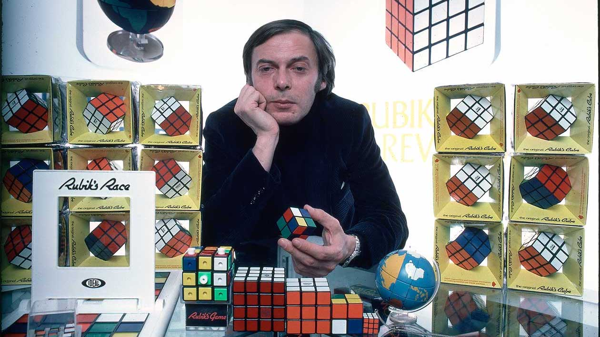

Ernő Rubik is the inventor of the Rubik's Cube.
Born on 13 July 1944, Budapest, Hungary, Rubik studied at Technical University in Budapest and architecture at the Academy of Applied Arts and Design, also in Budapest. It was first made in 1974.
Starting with blocks of wood and rubber bands, Rubik set out to create a structure which would allow the individual pieces to move without the whole structure falling apart.
Rubik originally used wood for the block because of the convenience of a workshop at the university and because he viewed wood as a simple material to work with that did not require sophisticated machinery.
Rubik made the original prototypes of his cube by hand, cutting the wood, boring the holes and using elastic bands to hold the contraption together.
Rubik showed his prototype to his class and his students liked it very much.
Rubik realized that, because of the cube's simple structure, it could be manufactured relatively easily and might have appeal to a larger audience.
Rubik's father possessed several patents, so Rubik was familiar with the process and applied for a patent for his invention. Rubik then set out to find a manufacturer in Hungary, but had great difficulty due to the rigid planned economy of communist Hungary at the time.
Eventually, Rubik was able to find a small company that worked with plastic and made chess pieces.The cube was originally known in Hungary as the Magic Cube.
Rubik licensed the Magic Cube to Ideal Toys, a US company in 1979. Ideal rebranded The Magic Cube to the Rubik's Cube before its introduction to an international audience in 1980.
The process from early prototype to significant mass production of the Cube had taken over six years.The Rubik's Cube would go on to become an instant success worldwide, winning several Toy of the Year awards, and becoming a staple of 1980s popular culture. To date, over 350 million Rubik's Cubes have been sold, making it one of the best selling toys of all time.